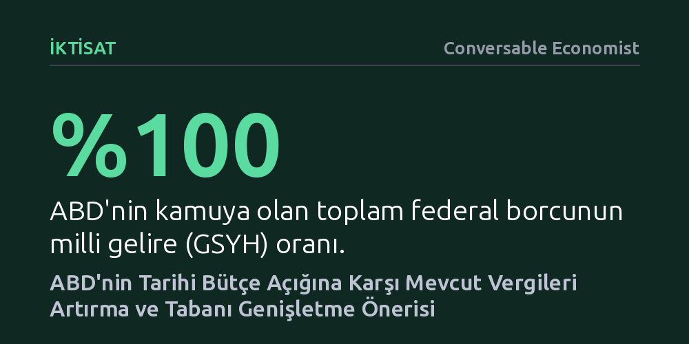

IKTISAT · Conversable Economist · 2026-10-09
ABD borcunun milli gelire oranı tarihi zirveye çıkarken, bütçe açığını kapatmak için yeni vergiler yerine mevcut kurumlar ve gelir vergilerinin artırılması öneriliyor. Öneri, harcamaları kısmak yerine vergi tabanını genişleterek yıllık bir trilyon dolar ek gelir toplamayı amaçlıyor.
Bütçe açıklarını kapatmanın tek yolunun harcama kesintisi veya yeni servet vergileri olmadığını, mevcut vergi mimarisini onararak da devasa kaynak yaratılabileceğini gösteriyor.

ABD federal hükümetinin 2026 yılı harcamalarının 7,4 trilyon dolara ulaşması ve bu tutarın yaklaşık dörtte biri olan 1,9 trilyon doların borçlanmayla finanse edilmesi bekleniyor. Geçmişte bu boyuttaki bütçe açıkları genellikle büyük savaşlar, küresel salgınlar veya derin ekonomik krizler sırasında mazur görülürdü; ancak bugün ortada olağanüstü bir kriz olmamasına rağmen borç stoku hızla tırmanıyor.
Kamunun elindeki toplam federal borç miktarı ABD gayrisafi yurtiçi hasılasının yüzde 100'üne dayanmış durumda. Bu seviye, İkinci Dünya Savaşı harcamalarının finanse edildiği dönemin tarihi rekoruyla neredeyse aynı ve yukarı yönlü hareketine devam ediyor. Ciddi bir mali düzeltme yapılmadığı takdirde borç yükünün sürdürülemez hale geleceği uyarısı yapılıyor.
Ekonomistler Kimberly Clausing ve Natasha Sarin, bütçe açığını dizginlemek için servet vergisi gibi sıfırdan yeni ve karmaşık vergiler getirmek yerine, mevcut vergi tabanını dönüştürmeyi öneriyor. Hazırlanan teklif paketi, özellikle en yüksek kazancı elde eden şirketler ve zengin kesimler üzerindeki vergi yükünü yeniden düzenleyen beş ana gelir havuzuna dayanıyor.
Kurumlar vergisi ayağında, kârı en yüksek şirketler için oranın yüzde 27'ye çıkarılması ve en tepedeki yüzde 0,5'lik gruba ek vergi konulması hedefleniyor. Bununla birlikte yatırımların anında gider yazılmasına imkân tanınırken borç faizi indirimlerinin tamamen kaldırılması planlanıyor; böylece vergi avantajı sebebiyle verimsiz borçlanmaların sübvanse edilmesinin ve uluslararası kâr transferlerinin engellenmesi amaçlanıyor.
Sistemdeki vergi kaçağının büyüklüğü de mali tablonun vahametini artırıyor. Yüksek gelir grubuna yönelik vergi denetim oranları 2010 ile 2021 yılları arasında yüzde 16,5'ten yüzde 2'ye gerilemiş durumda. Bu çöküş nedeniyle ödenmesi gerekip de toplanamayan vergi açığı yıllık 870 milyar dolara, yani milli gelirin yüzde 2,7'sine ulaşıyor; üst gelir gruplarındaki uyumsuzluğun tespiti zor olduğundan gerçek açığın çok daha yüksek olduğu tahmin ediliyor.
Öneri paketi, gelir vergisi dilimlerinin federal bütçenin fazla verdiği ve ekonomik büyümenin güçlü olduğu 1997 yılı seviyelerine döndürülmesini içeriyor. Ayrıca tarihsel olarak alkol ve tütün gibi ürünleri caydırmak için uygulanan günah vergilerinin, kumar ve karbon salımlarını da kapsayacak şekilde genişletilmesi tavsiye ediliyor.
Bütçe açığını kapatırken neden harcamaların kısılması yerine vergilere odaklanıldığı sorusuna ekonomistler iki temel veriyle karşılık veriyor: ABD'nin borç stoku benzer ülkelere kıyasla yüksek seyrederken vergi gelirleri belirgin biçimde düşük kalıyor ve bütçedeki büyük kalemleri kısmak pratikte mümkün görünmüyor.
Federal bütçenin aslan payını alan Sosyal Güvenlik ve Medicare harcamaları yaşlanan nüfus nedeniyle kaçınılmaz olarak artarken, küresel jeopolitik gerilimler savunma harcamalarının sürdürülmesini gerektiriyor; geçmiş borçların faiz ödemelerinden feragat etmek ise söz konusu bile değil. Yaklaşık 1 trilyon dolarlık bir harcama kesintisi gerçekçi olmadığından, harcanan her dört doların birinin borçlanıldığı bu tabloda radikal vergi artışları tek çıkar yol olarak öne çıkıyor.